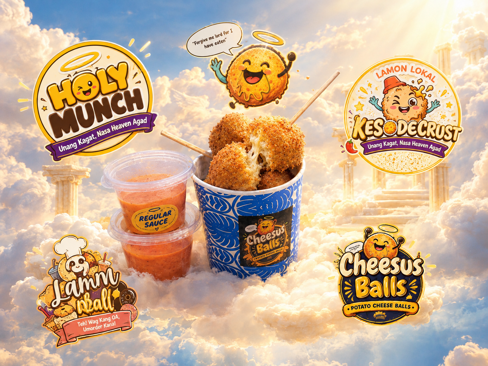

OUR STORY
More Than Just a Snack!
A student-made food business created with creativity, teamwork, and a love for delicious snacks.

Good food, good mood, heavenly flavor.
Holy Munch is our brand under Lamon Lokal. Our featured product, Cheesus Balls, is a potato-based snack made to bring a fun and satisfying food experience to our customers.
Through this project, we explore food preparation, product innovation, teamwork, and entrepreneurship. Our goal is to share a tasty snack that people can enjoy with friends and family.